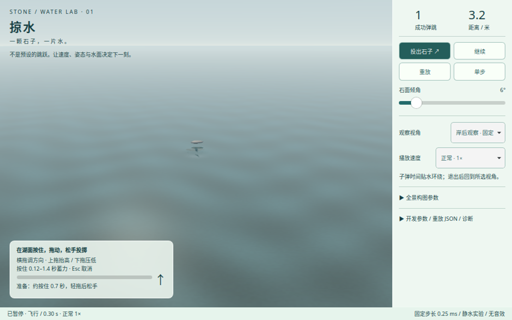
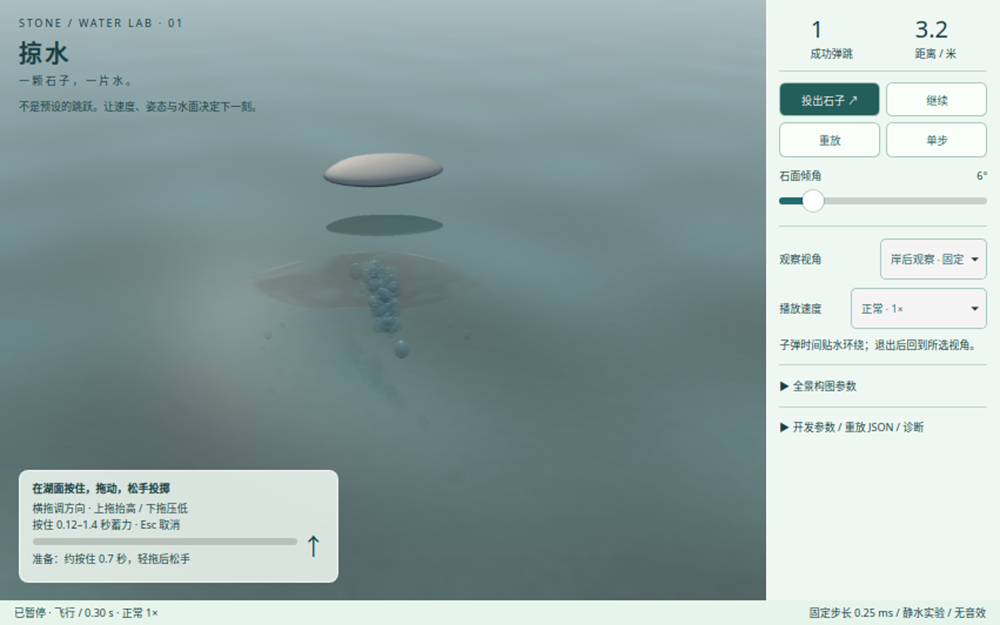

Water variation · 同物理，不同视觉细节
真实浏览器1280×800截图；物理seed 271，出手T=0；视觉温度 surface=.35 / sheet=.8 / breakup=1.1。左视觉seed 0，右seed 7。各阶段同机位同光照。采用现有可调固定机位：高.65m、后退.2m、方位18°、目标2.9m、FOV32°；不是新增镜头模式。应用默认2.1m/2.4m未改。
接触0.260366s、离水0.276128s；弱滴回落从约0.343s开始。这里的数值独特性不等于远景肉眼足够明显：首触/离水薄幕仍很淡，回落更可辨。无焦散、无体积破碎达标宣称。图片无白圈或随机闪光增强。
接触 · .270s
visual 0 · .35/.8/1.1visual 7 · .35/.8/1.1离水后 · .295s
visual 0 · .35/.8/1.1
visual 7 · .35/.8/1.1首批回落 · .375s
visual 0 · .35/.8/1.1visual 7 · .35/.8/1.1细节审阅 · 不是默认观感达标证据
本轮已修正节点出生喷速/湿区冻结问题，但实际近看仍有规则网孔、近似轮廓；去模板视觉验收未满足。正常同机位仍偏小暗。近距实际渲染：高.18m、距离−2.5m、方位0°、目标2.98m、FOV32°。
细节审阅 visual0 · .295s
细节审阅 visual7 · .295s 实测（非视觉通过）
新出生节点半宽10.58–69.27mm、喷速.098–1.076m/s随接触变化，跨seed不改变物理包络；默认左半宽44.25–70.61mm。diversity.json已刷新，来自实际几何/掩码/粒子，不包含seed字段作为多样性结果。全T0仍相同。16/16不是去模板成功证据。
首次h与法线响应距真实接触.133728ms模拟时间；1×墙钟等效.133728ms、.05×等效2.67456ms（还需等待真实RAF显示；非屏幕像素阈值）。57测试通过，12/12实际shader链接。主线程100帧正常均值5.21/P95 9ms，RAF18.14/P95 37ms；.05×CPU1.54/P95 2ms，RAF17.12/P95 40ms。不是GPU计时或稳定60fps宣称。
完整多样性JSON · 首触0–50ms逐帧 · 真实帧样本与shader链接 · 57测试日志